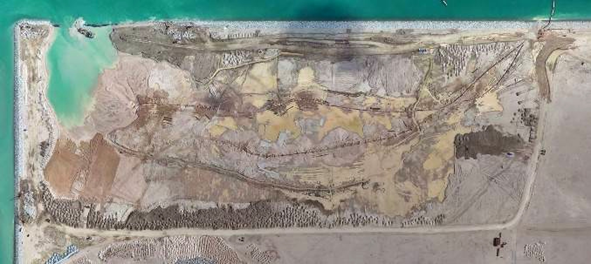

แผนที่พื้นที่ F2
ติดตามโซนบดอัด, พิกัดเครื่องจักร และเส้นทางรถบรรทุกทราย
Admin Drag Mode

ใช้ล้อเมาส์เพื่อซูม, ลากพื้นแผนที่เพื่อเลื่อน, ลากเครื่องจักรเพื่ออัปเดตพิกัด
สถานะการทำงานของเครื่องจักร
เลือกสถานะรายคัน
รูปอ้างอิง